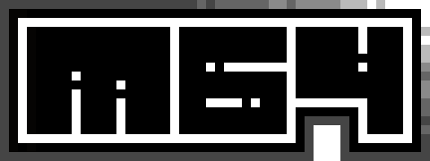

Hi, I'm m64.
I love pixels. Started pushing them around on a C64 in assembly. Never stopped loving the low level. Now I write systems code in Zig — low-level networking, emulators, terminal graphics, the occasional game. When not coding, I'm soldering ESP32s or making music on Game Boys.
init
Systems programmer in Vienna. C64 assembly → Intel assembly → C/C++ → Zig. I build unusual systems at the intersection of low-level engineering and creative computing.
main_loop
Most of what I make lives in the terminal — and a lot of it runs on movy, an engine that renders glowing neon at 60fps in a text terminal.
.sid music, render WAV, mix SFX.i/o
Electronics background — I like to play around with ESP32, STM32, and similar. Bridging circuits, code, sound, and pixels. The 64 is the Commodore 64: where the love of pixels and the low level started, and never left.